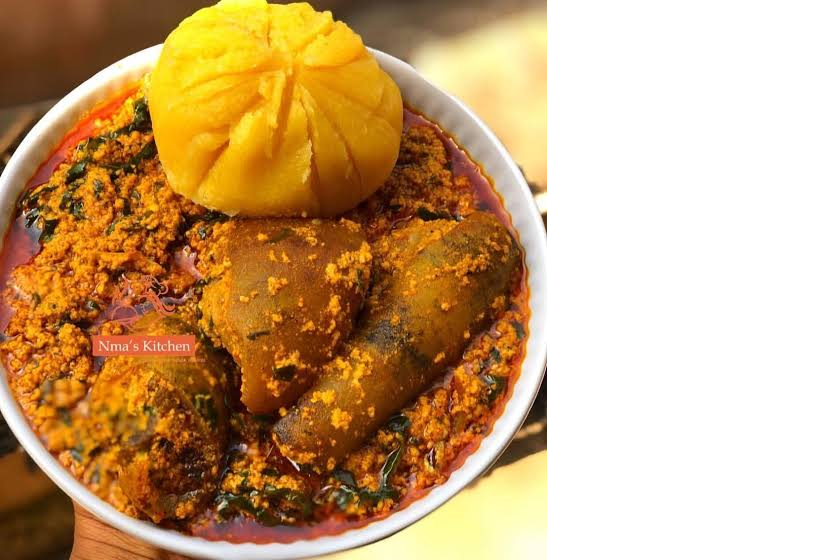

FOOD
Home | Classes | Contact
FOOD
Food is any substance consumed to provide nutritional support for an organism. Food is usually of plant, animal or fungal origin, and contains essential nutrients, such as carbohydrates, fats, proteins, vitamins, or minerals. The substance is ingested by an organism and assimilated by the organism's cells to provide energy, maintain life, or stimulate growth. Different species of animals have different feeding behaviours that satisfy the needs of their unique metabolisms, often evolved to fill a specific ecological niche within specific geographical contexts
Omnivorous humans are highly adaptable and have adapted to obtain food in many different ecosystems. Historically, humans secured food through two main methods: hunting and gathering and agriculture. As agricultural technologies increased, humans settled into agriculture lifestyles with diets shaped by the agriculture opportunities in their geography. Geographic and cultural differences has led to creation of numerous cuisines and culinary arts, including a wide array of ingredients, herbs, spices, techniques, and dishes. As cultures have mixed through forces like international trade and globalization, ingredients have become more widely available beyond their geographic and cultural origins, creating a cosmopolitan exchange of different food traditions and practices.
Food is important for life. To be healthy and active, we should certainly have enough food. The food we eat should be safe and rich in all the nutrients for our body needs. We should choose from a wide variety of foods and we should eat them regularly, every day. Do not forget that we should also enjoy the food that we eat; it should look, smell and taste good. Without good nutrition, children and young people cannot develop their potential to the full and adults will have difficulty in doing their best.
WRITING
Writing is the representation of sound and speech in meaningful form and in graphic form on papyrus, stone, vellum or parchment, or on similar objects. Through the alphabet, we make a combination of letters to spell out every sound that we make when speaking